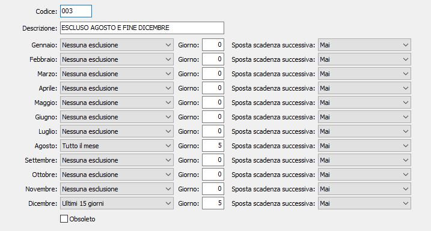

Esclusioni pagamento
In taluni casi si rende necessario escludere totalmente o parzialmente uno o più mesi dalle scadenze di pagamenti con ricevuta bancaria, tratte, bonifici o simili.
Dopo aver indicato la modalità di pagamento, può essere quindi necessario inserire nell’anagrafica del cliente o del fornitore, oppure direttamente durante la registrazione dei documenti, una “esclusione di pagamento” che consente di differire talune scadenze che cadrebbero in periodi particolari.
Gli elementi di questa tabella, agendo in combinazione con gli elementi della tabella Modalità di pagamento, provvedono a questa necessità.

CODICE: codice alfanumerico di 3 caratteri per identificare l’esclusione in esame. Su questo campo sono attive le funzioni di ricerca.
DESCRIZIONE: campo alfanumerico di 30 caratteri per inserire la descrizione dei mesi esclusi.
MESI DA GENNAIO A DICEMBRE: combo box che consente di attivare, per ciascun mese, la tipologia di esclusione prevista. Valori possibili:
Nessuna esclusione
Tutto il mese
Primi 15 giorni
Ultimi 15 giorni
GIORNO: campo numerico per indicare il giorno del mese successivo a cui deve essere spostata la scadenza.
SPOSTA SCADENZA SUCCESSIVA: consente di decidere se spostare l'eventuale scadenza successiva a quella esclusa in base al numero dei giorni di differenza tra le due scadenze. Valori possibili:
Mai
Se stesso giorno
Se entro 5 giorni
Se entro 10 giorni
Se entro 15 giorni
Se entro 20 giorni
Se entro 25 giorni
Se entro 30 giorni